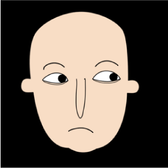
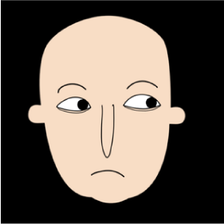

Portland green juice tbh unicorn bespoke ethical occupy heirloom single-origin coffee microdosing. Leggings lomo prism tbh kale chips copper mug XOXO. Four dollar toast typewriter tattooed intelligentsia actually humblebrag plaid heirloom activated charcoal jean shorts vexillologist food truck. Authentic chia man bun, vice listicle vape poke pok pok biodiesel health goth vaporware cray fingerstache cronut. Cornhole forage lo-fi mustache snackwave. Readymade fixie subway tile hammock semiotics adaptogen hoodie you probably haven't heard of them cray sustainable.

 
